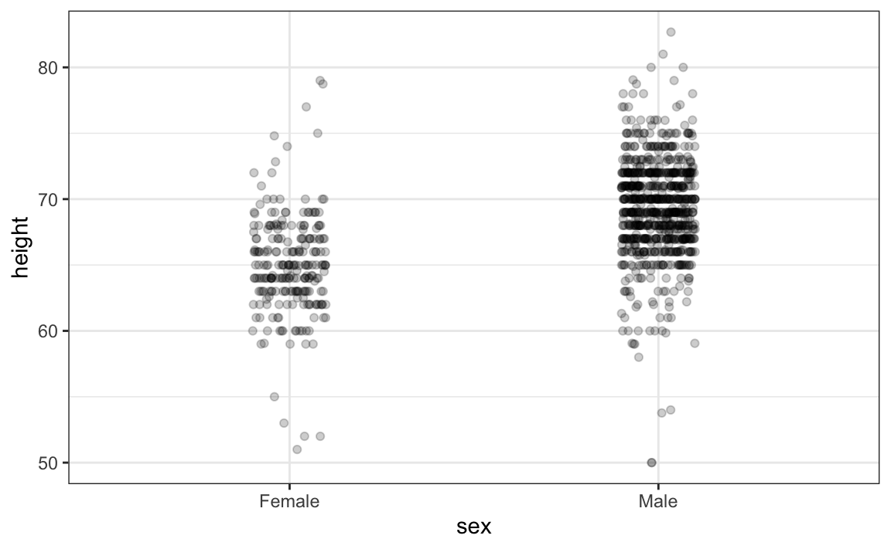
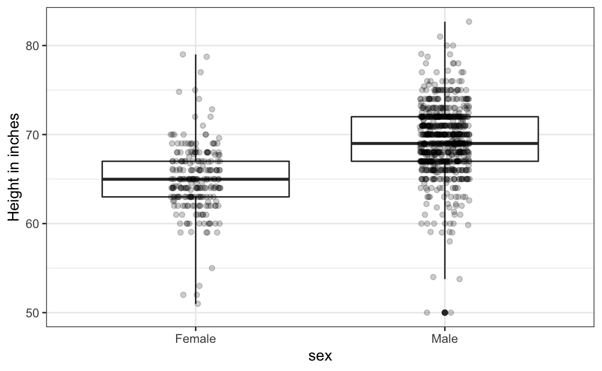
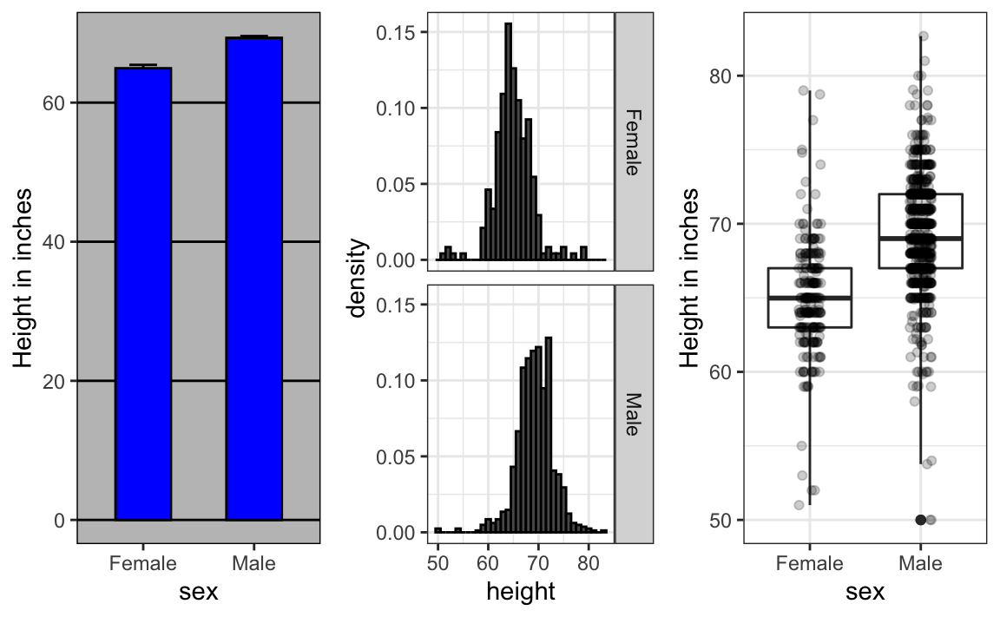
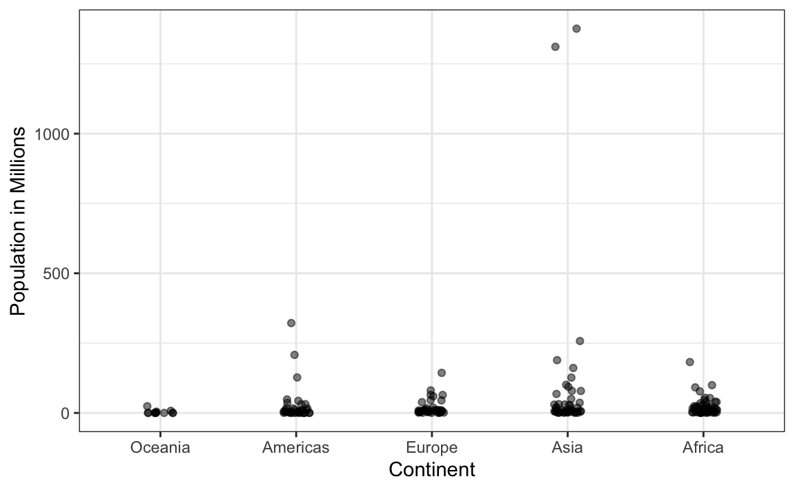
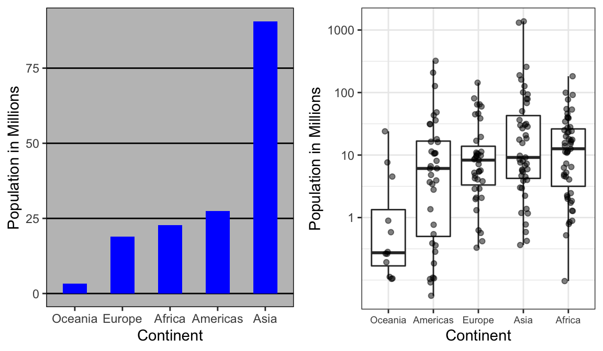
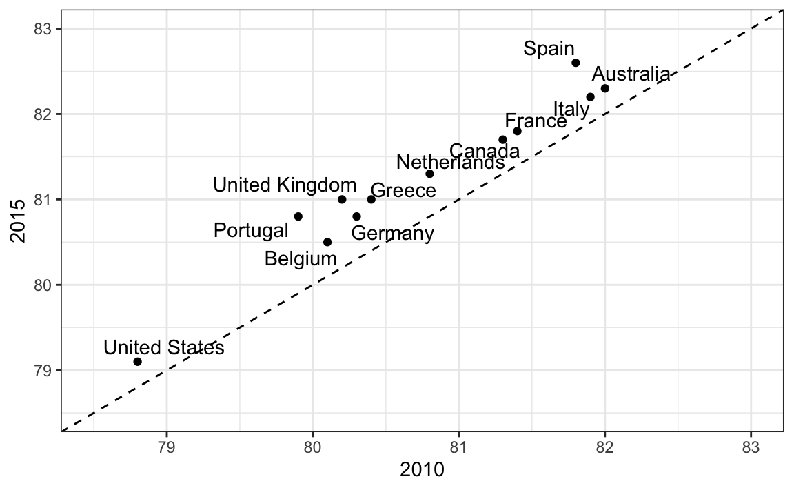
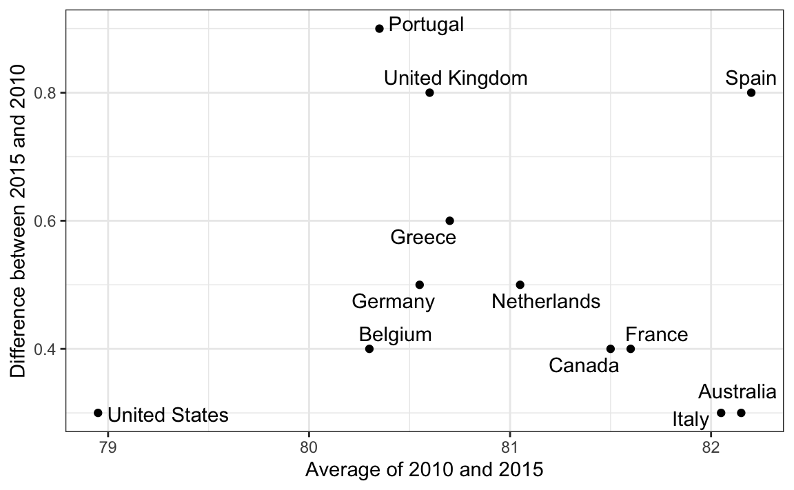
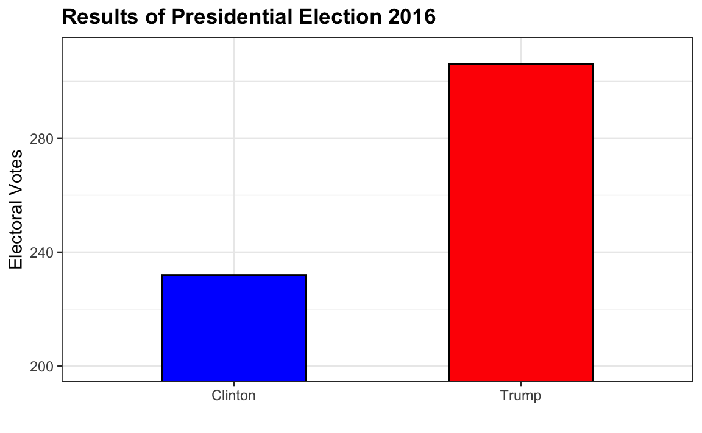

Capítulo 10 Principios de visualización de datos
Ya hemos presentado algunas reglas a seguir mientras creamos gráficos para nuestros ejemplos. Aquí nuestro objetivo es ofrecer algunos principios generales que podemos usar como guía para una visualización de datos efectiva. Gran parte de esta sección se basa en una charla de Karl Broman35 titulada “Creating Effective Figures and Tables”36 e incluye algunas de las figuras que se hicieron con el código que Karl pone a disposición en su repositorio de GitHub37, así como las notas de la clase “Introduction to Data Visualization” de Peter Aldhous38. Siguiendo el enfoque de Karl, mostramos algunos ejemplos de estilos de gráficos que debemos evitar, explicamos cómo mejorarlos y entonces los usamos como motivación para una lista de principios. Además, comparamos y contrastamos los gráficos que siguen estos principios con otros que los ignoran.
Los principios se basan principalmente en investigaciones relacionadas a la manera en que los humanos detectan patrones y hacen comparaciones visuales. Los enfoques preferidos son aquellos que mejor se adaptan a la forma en que nuestros cerebros procesan la información visual. Al escoger las herramientas de visualización, es importante tener en cuenta nuestro objetivo. Podemos estar comparando una cantidad de números suficientemente pequeña que se pueden distinguir, describiendo distribuciones de datos categóricos o valores numéricos, comparando los datos de dos grupos o describiendo la relación entre dos variables. Todo esto afecta la presentación que escojeremos. Como nota final, queremos enfatizar que para los científicos de datos es importante adaptar y optimizar los gráficos para la audiencia. Por ejemplo, un gráfico exploratorio hecho para nosotros será diferente a una tabla destinada a comunicar un hallazgo a una audiencia general.
Utilizaremos estos paquetes:
library(tidyverse)
library(dslabs)
library(gridExtra)10.1 Cómo codificar datos utilizando señales visuales
Comenzamos describiendo algunos principios para codificar datos. Hay varios acercamientos a nuestra disposición que incluyen posición, largo, ángulos, área, brillo y tono de color.
Para ilustrar cómo se comparan algunas de estas estrategias, supongan que queremos informar los resultados de dos encuestas hipotéticas, tomadas en 2000 y luego en 2015, con respecto a la preferencia de navegador. Para cada año, simplemente estamos comparando cinco cantidades: los cinco porcentajes. Una representación gráfica de porcentajes ampliamente utilizada y popularizada por Microsoft Excel, es el gráfico circular:

Aquí estamos representando cantidades con áreas y ángulos, ya que tanto el ángulo como el área de cada sección del gráfico son proporcionales a la cantidad que representa el sector. Esto resulta ser una opción subóptima dado que, como lo demuestran los estudios de percepción, los humanos no son buenos para cuantificar ángulos con precisión y son aún peores cuando el área es la única señal visual disponible. El gráfico de anillo es un ejemplo de un gráfico que usa solo área:

Para ver cuán difícil es cuantificar los ángulos y el área, recuerden que las clasificaciones y todos los porcentajes en los gráficos anteriores cambiaron de 2000 a 2015. ¿Pueden determinar los porcentajes reales y clasificar la popularidad de los navegadores? ¿Pueden ver cómo los porcentajes cambiaron de 2000 a 2015? No es fácil distinguirlo del gráfico. De hecho, la función pie de la página de ayuda de R señala que:
Los gráficos circulares son una forma muy mala de mostrar información. El ojo es bueno juzgando medidas lineales y malo juzagando áreas relativas. Un diagrama de barras o de puntos es una forma preferible de mostrar este tipo de datos.
En este caso, simplemente mostrar los números no solo es más claro, sino que también ahorraría costos de impresión si imprimen una copia en papel:
| Browser | 2000 | 2015 |
|---|---|---|
| Opera | 3 | 2 |
| Safari | 21 | 22 |
| Firefox | 23 | 21 |
| Chrome | 26 | 29 |
| IE | 28 | 27 |
La forma preferida de graficar estas cantidades es usar la longitud y la posición como señales visuales, ya que los humanos son mucho mejores juzgando medidas lineales. El diagrama de barras usa este enfoque al usar barras de longitud proporcionales a las cantidades de interés. Al añadir líneas horizontales a valores estratégicamente elegidos, en este caso en cada múltiplo de 10, aliviamos la carga visual de cuantificar a través de la posición de la parte superior de las barras. Comparen y contrasten la información que podemos extraer de los siguientes dos pares de gráficos.

Observen lo fácil que es ver las diferencias en el diagrama de barras. De hecho, ahora podemos determinar los porcentajes reales siguiendo una línea horizontal hasta el eje-x.
Si por alguna razón tienen que hacer un gráfico circular, etiqueten cada sección del círculo con su porcentaje respectivo para que la audiencia no tenga que inferirlos de los ángulos o del área:

En general, cuando se muestran cantidades, se prefieren la posición y la longitud sobre los ángulos y/o el área. El brillo y el color son aún más difíciles de cuantificar que los ángulos. Pero, como veremos más adelante, a veces son útiles cuando se deben mostrar más de dos dimensiones a la vez.
10.2 Cuándo incluir 0
Cuando se usan diagramas de barras, es erróneo no comenzar las barras en 0. Esto se debe a que, al usar un diagrama de barras, estamos implicando que la longitud es proporcional a las cantidades que se muestran. Al evitar 0, se pueden hacer diferencias relativamente pequeñas verse mucho más grandes de lo que realmente son. Este acercamiento a menudo es utilizado por políticos o medios de comunicación que intentan exagerar la diferencia. A continuación se muestra un ejemplo ilustrativo utilizado por Peter Aldhous en su conferencia39.

(Fuente: Fox News, vía Media Matters40.)
En el gráfico anterior, las detenciones parecen haber casi triplicado cuando, de hecho, solo han aumentado aproximadamente un 16%. Comenzar el gráfico en 0 ilustra esto claramente:

Abajo vemos otro ejemplo, que se describe en detalle en un artículo del blog “Flowing Data”:
 (Fuente: Fox News, a través de Flowing Data41.)
(Fuente: Fox News, a través de Flowing Data41.)
Este gráfico hace que un aumento del 13% parezca cinco veces más grande. Aquí tenemos el gráfico apropiado:

Finalmente, aquí tenemos un ejemplo extremo que hace que una diferencia muy pequeña, de menos de 2%, parezca 10 a 100 veces más grande:

(Fuente: El Mundo42 y Diego Mariano.)
Aquí está el gráfico apropiado:

Cuando se usa posición en lugar de longitud, no es necesario incluir 0. Este es el caso en particular cuando queremos comparar las diferencias entre los grupos en relación con la variabilidad dentro de un grupo. Aquí tenemos un ejemplo ilustrativo que muestra la esperanza de vida promedio de cada país estratificada por continente en 2012:

Tengan en cuenta que en el gráfico de la izquierda, que incluye 0, el espacio entre 0 y 43 no añade información y hace que sea más difícil comparar la variabilidad entre y dentro del grupo.
10.3 No distorsionar cantidades
Durante el discurso del Estado de la Unión de 2011 del Presidente Barack Obama, se utilizó el siguiente gráfico para comparar el PIB de EE. UU. con el PIB de cuatro naciones competidoras:
 (Fuente: The 2011 State of the Union Address43.)
(Fuente: The 2011 State of the Union Address43.)
Si juzgamos por el área de los círculos, Estados Unidos parece tener una economía cinco veces más grande que la de China y más de 30 veces más grande que la de Francia. Sin embargo, si nos fijamos en los números actuales, vemos que este no es el caso. Las proporciones son 2.6 y 5.8 veces mayores que las de China y Francia, respectivamente. La razón de esta distorsión es que el radio del círculo, en lugar del área, se hizo proporcional a la cantidad, lo que implica que la proporción entre las áreas es cuadrada: 2.6 se convierte en 6.5 y 5.8 se convierte en 34.1. Aquí hay una comparación de los círculos que obtenemos si hacemos que el valor sea proporcional al radio y al área:

No sorprende entonces que por defecto ggplot2 use el área en lugar del radio. Sin embargo, en este caso, realmente no deberíamos usar el área, ya que podemos usar la posición y la longitud:

10.4 Ordenar categorías por un valor significativo
Cuando uno de los ejes se usa para mostrar categorías, como se hace en los diagramas de barras, el comportamiento por defecto de ggplot2 es ordenar las categorías alfabéticamente cuando se definen por cadenas de caracteres. Si están definidas por factores, se ordenan según los niveles de factores. Raras veces queremos usar el orden alfabético. En cambio, debemos ordenar por una cantidad significativa. En todos los casos anteriores, los diagramas de barras se ordenaron según los valores que mostraban. La excepción fueron los diagramas de barras comparando navegadores. En ese caso, mantuvimos el orden igual en todos los diagramas de barras para facilitar la comparación. Específicamente, en vez de ordenar los navegadores por separado en los dos años, ordenamos ambos años por el valor promedio de 2000 y 2015.
Anteriormente aprendimos a usar la función reorder, que nos ayuda a lograr este objetivo. Para apreciar cómo el orden correcto puede ayudar a transmitir un mensaje, supongan que queremos crear un gráfico para comparar la tasa de homicidios en todos los estados de EE.UU. Estamos particularmente interesados en los estados más peligrosos y los más seguros. Tengan en cuenta la diferencia cuando ordenamos alfabéticamente, la accion por defecto, versus cuando ordenamos por la tasa real:

Podemos hacer el segundo gráfico así:
data(murders)
murders |> mutate(murder_rate = total/ population * 100000) |>
mutate(state = reorder(state, murder_rate)) |>
ggplot(aes(state, murder_rate)) +
geom_bar(stat="identity") +
coord_flip() +
theme(axis.text.y = element_text(size = 6)) +
xlab("")La función reorder también nos permite reordenar grupos. Anteriormente vimos un ejemplo relacionado con la distribución de ingresos entre regiones. Aquí vemos las dos versiones graficadas una contra la otra:

El primer gráfico ordena las regiones alfabéticamente, mientras que el segundo las ordena por la mediana del grupo.
10.5 Mostrar los datos
Nos hemos enfocado en mostrar cantidades únicas en todas las categorías. Ahora cambiamos nuestra atención a la visualización de datos con un enfoque en la comparación de grupos.
Para motivar nuestro primer principio, “mostrar los datos”, volvemos a nuestro ejemplo artificial de describir alturas a ET, un extraterrestre. Esta vez supongan que ET está interesado en la diferencia de alturas entre hombres y mujeres. Un gráfico comúnmente utilizado para comparaciones entre grupos y popularizado por software como Microsoft Excel, es el dynamite plot, que muestra el promedio y los errores estándar (los errores estándar se definen en un capítulo posterior, pero no los confundan con la desviación estándar de los datos). El gráfico se ve así:

El promedio de cada grupo está representado por la parte superior de cada barra y las antenas se extienden desde el promedio al promedio más dos errores estándar. Si todo lo que ET recibe es este gráfico, tendrá poca información sobre qué esperar si se encuentra con un grupo de hombres y mujeres. Las barras van a 0: ¿esto significa que hay humanos pequeños que miden menos de un pie? ¿Todos los varones son más altos que las hembras más altas? ¿Hay una rango de alturas? ET no puede responder a estas preguntas ya que casi no le hemos dado información sobre la distribución de altura.
Esto nos lleva a nuestro primer principio: mostrar los datos. Este código sencillo de ggplot2 ya genera un gráfico más informativo que el diagrama de barras al simplemente mostrar todos los puntos de datos:
heights |>
ggplot(aes(sex, height)) +
geom_point()
El gráfico anterior nos da una idea del rango de los datos. Sin embargo, este gráfico también tiene limitaciones, ya que realmente no podemos ver todos los 238 y 812 puntos graficados para hembras y varones, respectivamente, y muchos puntos están graficados uno encima del otro. Como hemos descrito anteriormente, visualizar la distribución es mucho más informativo. Pero antes de hacer esto, señalamos dos formas en que podemos mejorar un gráfico que muestra todos los puntos.
El primero es agregar jitter, que añade un pequeño desplazamiento aleatorio a cada punto. En este caso, agregar jitter horizontal no cambia la interpretación, ya que las alturas de los puntos no cambian, pero minimizamos el número de puntos que se superponen y, por lo tanto, tenemos una mejor idea visual de cómo se distribuyen los datos. Una segunda mejora proviene del uso de alpha blending, que hace que los puntos sean algo transparentes. Entre más puntos se superponen, más oscuro será el gráfico, que también nos ayuda tener una idea de cómo se distribuyen los puntos. Aquí está el mismo gráfico con jitter y alpha blending:
heights |>
ggplot(aes(sex, height)) +
geom_jitter(width = 0.1, alpha = 0.2)
Ahora comenzamos a sentir que, en promedio, los varones son más altos que las hembras. También observamos bandas horizontales oscuras de puntos, que demuestra que muchos estudiantes indican valores que se redondean al entero más cercano.
10.6 Cómo facilitar comparaciones
10.6.1 Usen ejes comunes
Como hay tantos puntos, es más efectivo mostrar distribuciones que puntos individuales. Por lo tanto, mostramos histogramas para cada grupo:

Sin embargo, mirando el gráfico arriba, no es inmediatamente obvio que los varones son, en promedio, más altos que las hembras. Tenemos que mirar cuidadosamente para notar que el eje-x tiene un rango más alto de valores en el histograma masculino. Un principio importante aquí es mantener los ejes iguales cuando se comparan datos en dos gráficos. A continuación, vemos cómo la comparación se vuelve más fácil:

10.6.2 Alineen gráficos verticalmente para ver cambios horizontales y horizontalmente para ver cambios verticales
En estos histogramas, la señal visual relacionada con las disminuciones o los aumentos de altura son los cambios hacia la izquierda o hacia la derecha, respectivamente: los cambios horizontales. Alinear los gráficos verticalmente nos ayuda a ver este cambio cuando los ejes son fijos:

heights |>
ggplot(aes(height, ..density..)) +
geom_histogram(binwidth = 1, color="black") +
facet_grid(sex~.)El gráfico anterior hace que sea mucho más fácil notar que los varones son, en promedio, más altos.
Si queremos obtener el resumen compacto que ofrecen los diagramas de caja, tenemos que alinearlos horizontalmente ya que, por defecto, los diagramas de caja se mueven hacia arriba y hacia abajo según los cambios de altura. Siguiendo nuestro principio de “mostrar los datos”, superponemos todos los puntos de datos:

heights |>
ggplot(aes(sex, height)) +
geom_boxplot(coef=3) +
geom_jitter(width = 0.1, alpha = 0.2) +
ylab("Height in inches")Ahora comparen y contrasten estos tres gráficos, basados en exactamente los mismos datos:

Observen cuánto más aprendemos de los dos gráficos a la derecha. Los diagramas de barras son útiles para mostrar un número, pero no son muy útiles cuando queremos describir distribuciones.
10.6.3 Consideren transformaciones
Hemos motivado el uso de la transformación logarítmica en los casos en que los cambios son multiplicativos. El tamaño de la población fue un ejemplo en el que encontramos que una transformación logarítmica produjo una transformación más informativa.
La combinación de un diagrama de barras elegido incorrectamente y no usar una transformación logarítimica cuando sea necesario puede ser particularmente distorsionante. Como ejemplo, consideren este diagrama de barras que muestra los tamaños de población promedio para cada continente en 2015:

Mirando el gráfico anterior, uno concluiría que los países de Asia son mucho más poblados que los de otros continentes. Siguiendo el principio de “mostrar los datos”, notamos rápidamente que esto se debe a dos países muy grandes, que suponemos son India y China:

El uso de una transformación logarítmica aquí produce un gráfico mucho más informativo. Comparamos el diagrama de barras original con un diagrama de caja usando la transformación de escala logarítmica para el eje-y:

Con el nuevo gráfico, nos damos cuenta de que los países de África tienen una población mediana mayor que los de Asia.
Otras transformaciones que deben considerar son la transformación logística (logit), que es útil para ver mejor los cambios en las probabilidades, y la transformación de la raíz cuadrada (sqrt), que es útil para conteos.
10.6.4 Señales visuales comparadas deben estar adyacentes
Para cada continente, comparemos los ingresos en 1970 versus 2010. Al comparar los datos de ingresos entre regiones entre 1970 y 2010, hicimos un gráfico similar al siguiente, pero esta vez investigamos continentes en lugar de regiones.

El comportamiento por defecto de ggplot2 es ordenar las etiquetas alfabéticamente para que las etiquetas con 1970 aparezcan antes que las etiquetas con 2010. Esto dificulta las comparaciones porque la distribución de un continente en 1970 está visualmente lejos de su distribución en 2010. Es mucho más fácil hacer la comparación entre 1970 y 2010 para cada continente cuando los diagramas de caja para ese continente están uno al lado del otro:


10.7 Consideren los daltónicos
Alrededor de 10% de la población es daltónica. Desafortunadamente, los colores por defecto utilizados en ggplot2 no son óptimos para este grupo. Sin embargo, ggplot2 hace fácil cambiar la paleta de colores utilizada en los gráficos. Existen ejemplos de paletas que consideran los daltónicos44.
color_blind_friendly_cols <-
c("#999999", "#E69F00", "#56B4E9", "#009E73",
"#F0E442", "#0072B2", "#D55E00", "#CC79A7")Aquí están los colores:

Además, hay varios recursos en linea que pueden ayudarlos a seleccionar colores45.
10.8 Gráficos para dos variables
En general, deben usar diagramas de dispersión para visualizar la relación entre dos variables. Para cada caso en el que hemos examinado la relación entre dos variables, incluyendo asesinatos totales versus tamaño de población, esperanza de vida versus tasas de fertilidad y mortalidad infantil versus ingresos, hemos utilizado diagramas de dispersión y ese es el gráfico que generalmente recomendamos. Sin embargo, hay algunas excepciones y aquí describimos dos gráficos alternativos: el slope chart y el gráfico Bland-Altman.
10.8.1 Slope charts
Una excepción en la que otro tipo de gráfico puede ser más informativo es cuando se comparan variables del mismo tipo, pero en diferentes momentos y para un número relativamente pequeño de comparaciones. Por ejemplo, si estamos comparando la esperanza de vida entre 2010 y 2015. En ese caso, recomendaríamos un slope chart.
No hay geometría para los slope charts en ggplot2, pero podemos construir una usando geom_line. Necesitamos hacer algunos ajustes para añadir etiquetas. A continuación, mostramos un ejemplo que compara 2010 a 2015 para los grandes países occidentales:
west <- c("Western Europe","Northern Europe","Southern Europe",
"Northern America","Australia and New Zealand")
dat <- gapminder |>
filter(year%in% c(2010, 2015) & region %in% west &
!is.na(life_expectancy) & population > 10^7)
dat |>
mutate(location = ifelse(year == 2010, 1, 2),
location = ifelse(year == 2015 &
country %in% c("United Kingdom", "Portugal"),
location+0.22, location),
hjust = ifelse(year == 2010, 1, 0)) |>
mutate(year = as.factor(year)) |>
ggplot(aes(year, life_expectancy, group = country)) +
geom_line(aes(color = country), show.legend = FALSE) +
geom_text(aes(x = location, label = country, hjust = hjust),
show.legend = FALSE) +
xlab("") + ylab("Life Expectancy")
Una ventaja del slope chart es que rápidamente nos permite tener una idea de los cambios basados en la pendiente de las líneas. Aunque estamos usando el ángulo como señal visual, también utilizamos la posición para determinar los valores exactos. Comparar las mejoras es un poco más difícil con un diagrama de dispersión:

En el diagrama de dispersión, hemos seguido el principio de usar ejes comunes porque estamos comparando estos antes y después. Sin embargo, si tenemos muchos puntos, los slope charts dejan de ser útiles ya que se hace difícil ver todas las líneas.
10.8.2 Gráfico Bland-Altman
Como estamos interesados principalmente en la diferencia, tiene sentido dedicarle uno de nuestros ejes. El gráfico Bland-Altman, también conocido como el gráfico de diferencia de medias de Tukey y como el MA plot, muestra la diferencia versus el promedio:
library(ggrepel)
dat |>
mutate(year = paste0("life_expectancy_", year)) |>
select(country, year, life_expectancy) |>
pivot_wider(names_from = "year", values_from="life_expectancy") |>
mutate(average = (life_expectancy_2015 + life_expectancy_2010)/2,
difference = life_expectancy_2015 - life_expectancy_2010) |>
ggplot(aes(average, difference, label = country)) +
geom_point() +
geom_text_repel() +
geom_abline(lty = 2) +
xlab("Average of 2010 and 2015") +
ylab("Difference between 2015 and 2010")
Aquí, al simplemente mirar el eje-y, rápidamente vemos qué países han mostrado la mayor mejora. También, obtenemos una idea del valor general del eje-x.
10.9 Cómo codificar una tercera variable
Un diagrama de dispersión anterior mostró la relación entre la supervivencia infantil y el ingreso promedio. A continuación se muestra una versión de este gráfico que codifica tres variables: pertenencia a OPEC, región y población.

Codificamos variables categóricas con color y forma. Estas formas se pueden controlar con el argumento shape. Abajo mostramos las formas disponibles para su uso en R. Para los últimos cinco, el color rellena la forma.

Para variables continuas, podemos usar color, intensidad o tamaño. A continuación ofrecemos un ejemplo de cómo hacer esto con un estudio de caso.
Al seleccionar colores para cuantificar una variable numérica, elegimos entre dos opciones: secuenciales y divergentes. Los colores secuenciales son adecuados para datos que van de mayor a menor. Los valores altos se distinguen claramente de los valores bajos. Aquí tenemos algunos ejemplos ofrecidos por el paquete RColorBrewer:
library(RColorBrewer)
display.brewer.all(type="seq")
Los colores divergentes se utilizan para representar valores que divergen de un centro. Ponemos igual énfasis en ambos extremos del rango de datos: más altos que el centro y más bajos que el centro. Un ejemplo de cuándo usaríamos un patrón divergente sería cuando mostramos la altura en cuántas desviaciones estándar están del promedio. Aquí hay algunos ejemplos de patrones divergentes:
library(RColorBrewer)
display.brewer.all(type="div")
10.10 Eviten los gráficos pseudo-tridimensionales
La siguiente figura, tomada de la literatura científica46, muestra tres variables: dosis, tipo de fármaco y supervivencia. Aunque sus pantallas o páginas de libros son planas y bidimensionales, el gráfico intenta imitar tres dimensiones y asigna una dimensión a cada variable.
 (Imagen cortesía de Karl Broman.)
(Imagen cortesía de Karl Broman.)
Los humanos no son buenos para ver en tres dimensiones (que explica por qué es difícil estacionar en paralelo) y nuestra limitación es aún peor con respecto a las pseudo-tres dimensiones. Para ver esto, intenten determinar los valores de la variable de supervivencia en el gráfico anterior. ¿Pueden identificar cuándo la cinta púrpura se cruza con la roja? Este es un ejemplo en el que podemos fácilmente usar color para representar la variable categórica en lugar de un pseudo-3D:

Observen cuánto más fácil es determinar los valores de supervivencia.
Pseudo-3D a veces se usa de forma totalmente gratuita: los gráficos se hacen para que se vean en 3D incluso cuando la tercera dimensión no representa una cantidad. Esto solo añade confusión y hace que sea más difícil transmitir su mensaje. Aquí hay dos ejemplos:

 (Imágenes cortesía de Karl Broman.)
(Imágenes cortesía de Karl Broman.)
10.11 Eviten demasiados dígitos significativos
Por defecto, el software estadístico como R devuelve muchos dígitos significativos. El comportamiento por defecto en R es mostrar 7 dígitos significativos. Esa cantidad de dígitos a menudo no añade información y el desorden visual agregado puede dificultar que se entienda el mensaje. Como ejemplo, aquí están las tasas de enfermedades por cada 10,000 para California en cinco décadas, calculadas de los totales y la población con R:
| state | year | Measles | Pertussis | Polio |
|---|---|---|---|---|
| California | 1940 | 37.8826320 | 18.3397861 | 0.8266512 |
| California | 1950 | 13.9124205 | 4.7467350 | 1.9742639 |
| California | 1960 | 14.1386471 | NA | 0.2640419 |
| California | 1970 | 0.9767889 | NA | NA |
| California | 1980 | 0.3743467 | 0.0515466 | NA |
Estamos reportando precisión de hasta 0.00001 casos por 10,000, un valor muy pequeño en el contexto de los cambios que ocurren a través del tiempo. En este caso, dos cifras significativas son más que suficientes y claramente indican que las tasas están disminuyendo:
| state | year | Measles | Pertussis | Polio |
|---|---|---|---|---|
| California | 1940 | 37.9 | 18.3 | 0.8 |
| California | 1950 | 13.9 | 4.7 | 2.0 |
| California | 1960 | 14.1 | NA | 0.3 |
| California | 1970 | 1.0 | NA | NA |
| California | 1980 | 0.4 | 0.1 | NA |
Para cambiar el número de dígitos significativos o redondear números usamos signif y round. Pueden definir el número de dígitos significativos a nivel mundial configurando opciones como esta: options(digits = 3).
Otro principio relacionado con la visualización de tablas es colocar los valores que se comparan en columnas en lugar de filas. Observen que nuestra tabla anterior es más fácil de leer que esta:
| state | disease | 1940 | 1950 | 1960 | 1970 | 1980 |
|---|---|---|---|---|---|---|
| California | Measles | 37.9 | 13.9 | 14.1 | 1 | 0.4 |
| California | Pertussis | 18.3 | 4.7 | NA | NA | 0.1 |
| California | Polio | 0.8 | 2.0 | 0.3 | NA | NA |
10.12 Consideren a su audiencia
Los gráficos se pueden usar para 1) nuestros propios análisis exploratorios de datos, 2) para transmitir un mensaje a los expertos o 3) para ayudar a contar una historia a una audiencia general. Asegúrense de que el público destinario comprenda cada elemento del gráfico.
Como un ejemplo sencillo, consideren que para su propia exploración puede ser más útil transformar logarítmicamente los datos y luego graficarlos. Sin embargo, para una audiencia general que no está familiarizada con la conversión de valores logarítmicos a las medidas originales, será mucho más fácil entender el uso de una escala logarítmica para el eje en lugar de los valores transformados logarítmicamente.
10.13 Ejercicios
Para estos ejercicios, utilizaremos los datos de vacunas en el paquete dslabs:
library(dslabs)
data(us_contagious_diseases)1. Los gráficos circulares son apropiados:
- Cuando queremos mostrar porcentajes.
- Cuando ggplot2 no está disponible.
- Cuando estoy jugando frisbee.
- Nunca. Los diagramas de barras y las tablas siempre son mejores.
2. ¿Cuál es el problema con el siguiente gráfico?

- Los valores están mal. La votación final fue de 306 a 232.
- El eje no comienza en 0. Juzgando por la longitud, parece que Trump recibió 3 veces más votos cuando, de hecho, fue aproximadamente 30% más.
- Los colores deben ser iguales.
- Los porcentajes deben mostrarse como un gráfico circular.
3. Mire a los siguientes dos gráficos. Muestran la misma información: tasas de sarampión de 1928 en los 50 estados.
 ¿Qué gráfico es más fácil de leer si quiere determinar cuáles son los mejores y peores estados en términos de tasas, y por qué?
¿Qué gráfico es más fácil de leer si quiere determinar cuáles son los mejores y peores estados en términos de tasas, y por qué?
- Dan la misma información, por lo que ambos son igual de buenos.
- El gráfico de la izquierda es mejor porque ordena los estados alfabéticamente.
- El gráfico de la derecha es mejor porque el orden alfabético no tiene nada que ver con la enfermedad y al ordenar según la tasa real, rápidamente vemos los estados con las tasas más altas y más bajas.
- Ambos gráficos deben ser un gráfico circular.
4. Para hacer el gráfico de la izquierda, tenemos que reordenar los niveles de las variables de los estados.
dat <- us_contagious_diseases |>
filter(year == 1967 & disease=="Measles" & !is.na(population)) |>
mutate(rate = count/ population * 10000 * 52/ weeks_reporting)Recuerde lo que sucede cuando hacemos un diagrama de barras:
dat |> ggplot(aes(state, rate)) +
geom_bar(stat="identity") +
coord_flip()
Defina estos objetos:
state <- dat$state
rate <- dat$count/dat$population*10000*52/dat$weeks_reportingRedefina el objeto state para que los niveles se reordenen. Imprima el nuevo objeto state y sus niveles para que pueda ver que los niveles no reordenan el vector.
5. Ahora edite el código de arriba para redefinir dat para que los niveles de la variable state se reordenen por la variable rate. Entonces haga un diagrama de barras usando el código anterior, pero para este nuevo dat.
6. Digamos que está interesado en comparar las tasas de homicidios con armas de fuego en todas las regiones de EE. UU. Ve este gráfico:
library(dslabs)
data("murders")
murders |> mutate(rate = total/population*100000) |>
group_by(region) |>
summarize(avg = mean(rate)) |>
mutate(region = factor(region)) |>
ggplot(aes(region, avg)) +
geom_bar(stat="identity") +
ylab("Murder Rate Average")
y decide mudarse a un estado en la región occidental. ¿Cuál es el problema principal con esta interpretación?
- Las categorías están ordenadas alfabéticamente.
- El gráfico no muestra errores estándar.
- El gráfico no muestra todos los datos. No vemos la variabilidad dentro de una región y es posible que los estados más seguros no estén en el occidente.
- El noreste tiene el promedio más bajo.
7. Haga un diagrama de caja de las tasas de asesinatos que se definen como:
data("murders")
murders |> mutate(rate = total/population*100000)por región, mostrando todos los puntos y ordenando las regiones por su tasa mediana.
8. Los gráficos a continuación muestran tres variables continuas.

La línea \(x=2\) parece separar los puntos. Pero realmente no es el caso, como vemos cuando graficamos los datos en un par de puntos bidimensionales.

¿Por qué pasa esto?
- Los humanos no son buenos leyendo gráficos pseudo-3D.
- Debe haber un error en el código.
- Los colores nos confunden.
- Los diagramas de dispersión no se deben usar para comparar dos variables cuando tenemos acceso a tres variables.
10.14 Estudio de caso: las vacunas y las enfermedades infecciosas
Las vacunas han ayudado a salvar millones de vidas. En el siglo XIX, antes de que se lograra la inmunización de grupo a través de programas de vacunación, las muertes por enfermedades infecciosas, como la viruela y la poliomielitis, eran comunes. Sin embargo, hoy los programas de vacunación se han vuelto algo controversiales a pesar de toda la evidencia científica de su importancia.
La controversia comenzó con un artículo47 publicado en 1988 y liderado por Andrew Wakefield, que afirmó la existencia de un vínculo entre la administración de la vacuna contra el sarampión, las paperas y la rubéola, y el autismo y las enfermedades intestinales. A pesar de la gran cantidad de evidencia científica que contradice este hallazgo, los informes sensacionalistas de los medios de comunicación y el alarmismo de los que creen en teorías de conspiración llevaron a partes del público a creer que las vacunas eran perjudiciales. Como resultado, muchos padres dejaron de vacunar a sus hijos. Esta práctica peligrosa puede ser potencialmente desastrosa dado que los Centros para el Control de Enfermedades de EE.UU. (CDC por sus siglas en inglés) estiman que las vacunas evitarán más de 21 millones de hospitalizaciones y 732,000 muertes entre los niños nacidos en los últimos 20 años (ver Benefits from Immunization during the Vaccines for Children Program Era — United States, 1994-2013, MMWR48). Desde entonces, “The Lancet” ha retractado el artículo y Andrew Wakefield finalmente fue “excluido del registro médico en mayo de 2010 con una observación que indica la falsificación fraudulenta en que incurrió y se le revocó la licencia para ejercer la medicina en el Reino Unido” (Fuente: Wikipedia49). Sin embargo, los conceptos erróneos perduran, en parte debido a activistas autoproclamados que continúan diseminando información errónea sobre las vacunas.
La comunicación efectiva de datos es un fuerte antídoto contra la información errónea y el miedo. Anteriormente enseñamos un ejemplo de un artículo del Wall Street Journal50 que muestra datos relacionados con el impacto de las vacunas en la lucha contra las enfermedades infecciosas. A continuación reconstruiremos ese ejemplo.
Los datos utilizados para estos gráficos fueron recopilados, organizados y distribuidos por el Proyecto Tycho51 e incluyen conteos reportados semanalmente para siete enfermedades desde 1928 hasta 2011 en los cincuenta estados de EE.UU. Incluimos los totales anuales en el paquete dslabs:
library(tidyverse)
library(RColorBrewer)
library(dslabs)
data(us_contagious_diseases)
names(us_contagious_diseases)
#> [1] "disease" "state" "year"
#> [4] "weeks_reporting" "count" "population"Creamos un objeto temporero dat que almacena solo los datos de sarampión, incluye la tasa por 100,000, ordena a los estados según el valor promedio de enfermedad y elimina Alaska y Hawai ya que estos dos se convirtieron en estados a fines de la década de 1950. Tengan en cuenta que hay una columna weeks_reporting que nos dice cuántas semanas del año se reportaron datos. Tenemos que ajustar ese valor al calcular la tasa:
the_disease <- "Measles"
dat <- us_contagious_diseases |>
filter(!state%in%c("Hawaii","Alaska") & disease == the_disease) |>
mutate(rate = count/ population * 10000 * 52/ weeks_reporting) |>
mutate(state = reorder(state, rate))Ahora podemos graficar fácilmente las tasas de enfermedad por año. Aquí están los datos de sarampión de California:
dat |> filter(state == "California" & !is.na(rate)) |>
ggplot(aes(year, rate)) +
geom_line() +
ylab("Cases per 10,000") +
geom_vline(xintercept=1963, col = "blue")
Añadimos una línea vertical en 1963, ya que es cuando se introdujo la vacuna52.
¿Ahora podemos mostrar datos para todos los estados en un gráfico? Tenemos tres variables para incluir: año, estado y tasa. En la figura del WSJ, usan el eje-x para el año, el eje-y para el estado y el tono de color para representar las tasas. Sin embargo, la escala de colores que utilizan, que va del amarillo al azul al verde al naranja al rojo, se puede mejorar.
En nuestro ejemplo queremos usar una paleta secuencial ya que no hay un centro significativo, solo tasas bajas y altas.
Usamos la geometría geom_tile para tejar la región con colores que representan las tasas de enfermedad. Usamos una transformación de raíz cuadrada para evitar que los conteos particularmente altos dominen el gráfico. Observen que los valores faltantes se muestran en gris. Además, noten que tan pronto una enfermedad fue prácticamente erradicada, algunos estados dejaron de informar casos por completo. Es por esa razón que vemos tanto gris después de 1980.
dat |> ggplot(aes(year, state, fill = rate)) +
geom_tile(color = "grey50") +
scale_x_continuous(expand=c(0,0)) +
scale_fill_gradientn(colors = brewer.pal(9, "Reds"), trans = "sqrt") +
geom_vline(xintercept=1963, col = "blue") +
theme_minimal() +
theme(panel.grid = element_blank(),
legend.position="bottom",
text = element_text(size = 8)) +
ggtitle(the_disease) +
ylab("") + xlab("")
Este gráfico ofrece evidencia preponderante a favor de la contribución de las vacunas. Sin embargo, una limitación es que usa el color para representar la cantidad, que, como explicamos anteriormente, dificulta saber exactamente cuán altos llegan los valores. La posición y la longitud son mejores señales. Si estamos dispuestos a perder información de estado, podemos hacer una versión del gráfico que muestre los valores con posición. También podemos mostrar el promedio de EE. UU., que calculamos así:
avg <- us_contagious_diseases |>
filter(disease==the_disease) |> group_by(year) |>
summarize(us_rate = sum(count, na.rm = TRUE)/
sum(population, na.rm = TRUE) * 10000)Ahora para hacer el gráfico simplemente usamos la geometría geom_line:
dat |>
filter(!is.na(rate)) |>
ggplot() +
geom_line(aes(year, rate, group = state), color = "grey50",
show.legend = FALSE, alpha = 0.2, size = 1) +
geom_line(mapping = aes(year, us_rate), data = avg, size = 1) +
scale_y_continuous(trans = "sqrt", breaks = c(5, 25, 125, 300)) +
ggtitle("Cases per 10,000 by state") +
xlab("") + ylab("") +
geom_text(data = data.frame(x = 1955, y = 50),
mapping = aes(x, y, label="US average"),
color="black") +
geom_vline(xintercept=1963, col = "blue")
En teoría, podríamos usar el color para representar los estados, que son una variable categórica, pero es difícil elegir 50 colores distintos.
10.15 Ejercicios
Reproduzca el mapa de matriz que hicimos anteriormente pero para la viruela. Para este gráfico, no incluya los años en que no se reportaron casos por 10 o más semanas.
Ahora reproduzca el gráfico de series de tiempo que hicimos anteriormente, pero esta vez siguiendo las instrucciones de la pregunta anterior para la viruela.
Para el estado de California, haga un gráfico de series de tiempo que muestre las tasas de todas las enfermedades. Incluya solo años con informes de 10 o más semanas. Use un color diferente para cada enfermedad.
Ahora haga lo mismo con las tasas para Estados Unidos. Sugerencia: calcule la tasa de EE. UU. usando
summarize: total dividido por población total.
https://www.biostat.wisc.edu/~kbroman/presentations/graphs2017.pdf↩︎
http://mediamatters.org/blog/2013/04/05/fox-news-newest-dishonest-chart-immigration-enf/193507↩︎
http://flowingdata.com/2012/08/06/fox-news-continues-charting-excellence/↩︎
https://www.elmundo.es/america/2013/04/15/venezuela/1366029653.html↩︎
http://www.cookbook-r.com/Graphs/Colors_(ggplot2)/#a-colorblind-friendly-palettefont↩︎
http://bconnelly.net/2013/10/creating-colorblind-friendly-figures/↩︎
https://projecteuclid.org/download/pdf_1/euclid.ss/1177010488↩︎
http://www.thelancet.com/journals/lancet/article/PIIS0140-6736(97)11096-0/abstract↩︎
Control, Centers for Disease; Prevention (2014). CDC health information for international travel 2014 (the yellow book). p. 250. ISBN 9780199948505↩︎